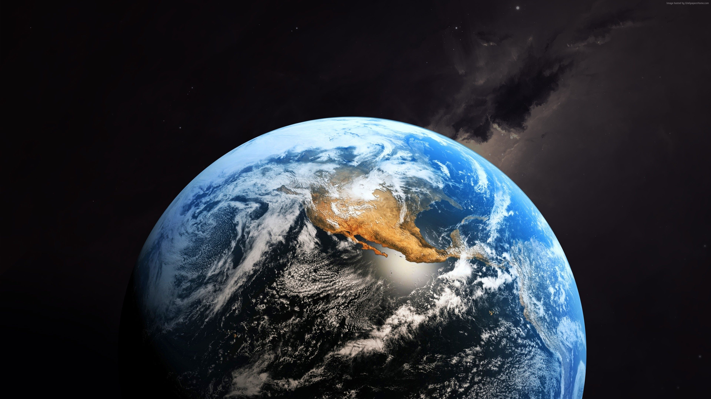
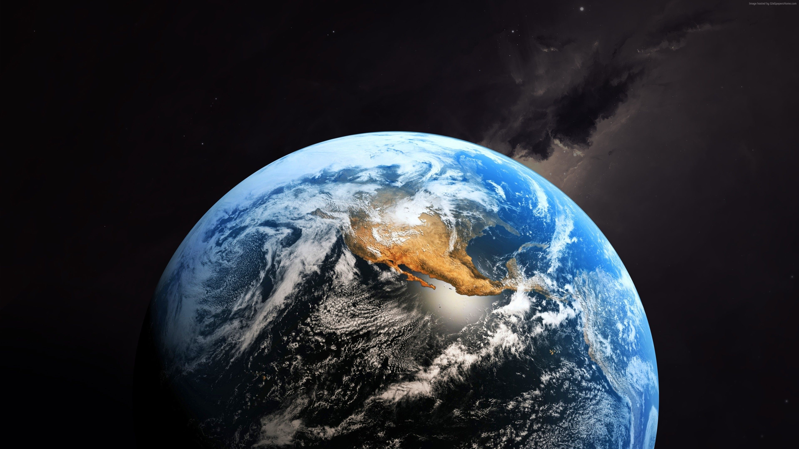

Курсовая работа Санникова Максима
На момент 2-ого курса мне 13 лет
 Земля образовалась примерно 4,54 млрд лет назад вместе с другими планетами Солнечной системы. Ранее на этом месте располагалось большое протопланетное облако, которое постепенно пришло во вращение. Находящиеся внутри него вещества начали сталкиваться друг с другом и собираться в планеты.
больше картинок с планетой Земля

1. Земля является третьей по счёту планетой от Солнца. Это единственная известная нам планета с кислородной атмосферой, океанами и жизнью.
2. Земля на самом деле не идеальной сферической формы. Из-за дисбаланса гравитационной и центробежной сил в районе экватора вокруг планеты есть небольшое вздутие, похожее на автомобильную запаску.
3. Земля имеет «талию» — протяжённость экватора составляет 40 075 км.
4. Вы думаете, что стоите на месте, но на самом деле вы двигаетесь. А всё потому, что Земля вращается вокруг Солнца и вокруг своей оси. В зависимости от того, где вы находитесь, вы можете двигаться в пространстве со скоростью свыше 1 600 км/ч. На экваторе люди движутся быстрее, а стоящие на Северном или Южном полюсе, практически неподвижны.
Земля образовалась примерно 4,54 млрд лет назад вместе с другими планетами Солнечной системы. Ранее на этом месте располагалось большое протопланетное облако, которое постепенно пришло во вращение. Находящиеся внутри него вещества начали сталкиваться друг с другом и собираться в планеты.
больше картинок с планетой Земля

1. Земля является третьей по счёту планетой от Солнца. Это единственная известная нам планета с кислородной атмосферой, океанами и жизнью.
2. Земля на самом деле не идеальной сферической формы. Из-за дисбаланса гравитационной и центробежной сил в районе экватора вокруг планеты есть небольшое вздутие, похожее на автомобильную запаску.
3. Земля имеет «талию» — протяжённость экватора составляет 40 075 км.
4. Вы думаете, что стоите на месте, но на самом деле вы двигаетесь. А всё потому, что Земля вращается вокруг Солнца и вокруг своей оси. В зависимости от того, где вы находитесь, вы можете двигаться в пространстве со скоростью свыше 1 600 км/ч. На экваторе люди движутся быстрее, а стоящие на Северном или Южном полюсе, практически неподвижны.